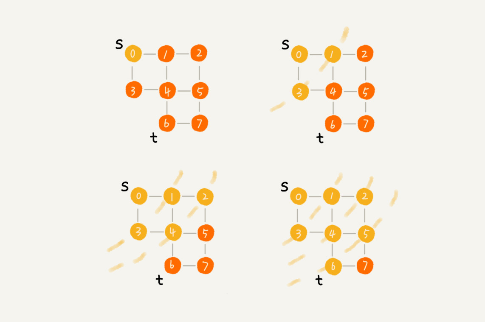
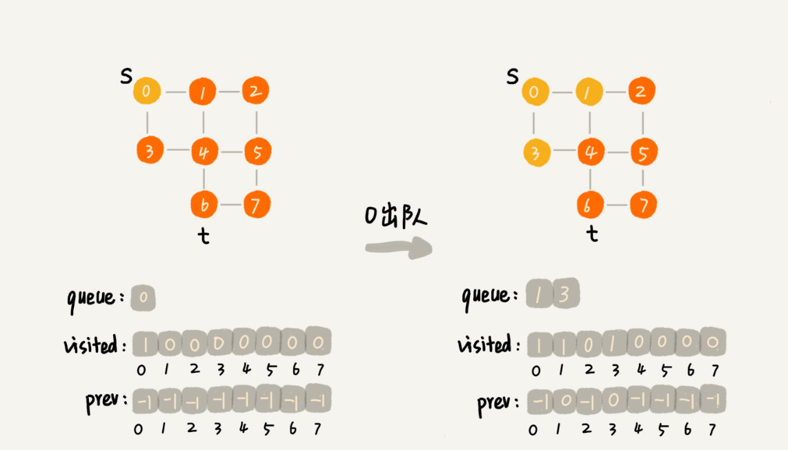
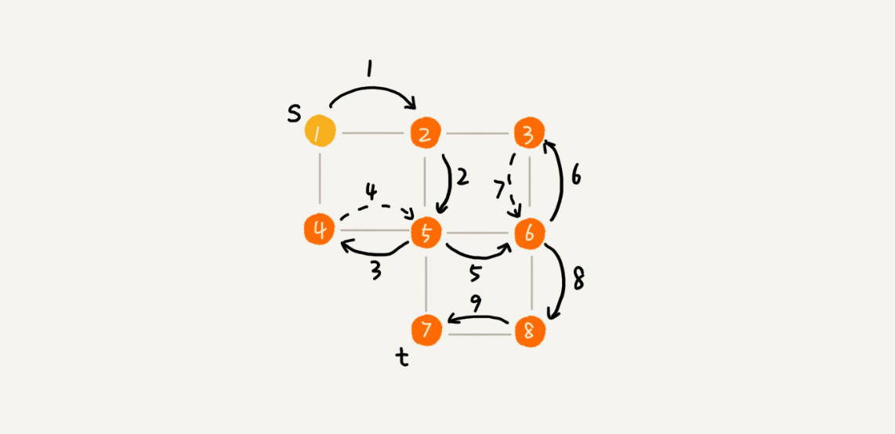

在社交网络中，有一个六度分隔理论，具体是说，你与世界上的另一个人间隔的关系不会超过六度，也就是说平均只需要六步就可以联系到任何两个互不相识的人。
一个用户的一度连接用户很好理解，就是他的好友，二度连接用户就是他好友的好友，三度连接用户就是他好友的好友的好友。在社交网络中，往往通过用户之间的连接关系，来实现推荐“可能认识的人”这么一个功能。
什么是“搜索”算法？
算法是作用于具体数据结构之上的，深度优先搜索算法和广度优先搜索算法都是基于“图”这种数据结构的。这是因为，图这种数据结构的表达能力很强，大部分涉及搜索的场景都可以抽象成“图”。
图上的搜索算法，最直接的理解就是，在图中找出从一个顶点出发，到另一个顶点的路径。具体方法有很多，比如今天要讲的两种最简单、最“暴力”的深度优先、广度优先搜索，还有 A*、IDA* 等启发式搜索算法。
先给出图的代码实现。需要说明一下，深度优先搜索算法和广度优先搜索算法，既可以用在无向图，也可以用在有向图上。在今天的文章中，都针对无向图来讲解。
1 | public class Graph { // 无向图 |
广度优先搜索（BFS）
广度优先搜索（Breadth-First-Search），平常都简称为 BFS。直观地讲，它其实就是一种“地毯式”层层推进的搜索策略，即先查找离起始顶点最近的，然后是次近的，依次往外搜索。理解起来并不难，所以这里有一张示意图，可以看下。

尽管广度优先搜索的原理挺简单，但代码实现还是稍微有点复杂度。
这里面，bfs() 函数就是基于之前定义的，图的广度优先搜索的代码实现。其中 s 表示起始顶点，t 表示终止顶点。搜索一条从 s 到 t 的路径。实际上，这样求得的路径就是从 s 到 t 的最短路径。
1 | public void bfs(int s, int t) { |
这段代码不是很好理解，里面有三个重要的辅助变量 visited、queue、prev。只要理解这三个变量，读懂这段代码估计就没什么问题了。
visited是用来记录已经被访问的顶点，用来避免顶点被重复访问。如果顶点 q 被访问，那相应的 visited[q] 会被设置为 true。
queue是一个队列，用来存储已经被访问、但相连的顶点还没有被访问的顶点。因为广度优先搜索是逐层访问的，也就是说，只有把第 k 层的顶点都访问完成之后，才能访问第 k+1 层的顶点。当访问到第 k 层的顶点的时候，需要把第 k 层的顶点记录下来，稍后才能通过第 k 层的顶点来找第 k+1 层的顶点。所以，用这个队列来实现记录的功能。
prev用来记录搜索路径。当从顶点 s 开始，广度优先搜索到顶点 t 后，prev 数组中存储的就是搜索的路径。不过，这个路径是反向存储的。prev[w] 存储的是，顶点 w 是从哪个前驱顶点遍历过来的。比如，通过顶点 2 的邻接表访问到顶点 3，那 prev[3] 就等于 2。为了正向打印出路径，需要递归地来打印，可以看下 print() 函数的实现方式。
为了方便理解，这里有一个广度优先搜索的分解图，可以结合着代码一块儿看。

掌握了广优先搜索算法的原理，广度优先搜索的时间、空间复杂度是多少呢？
最坏情况下，终止顶点 t 离起始顶点 s 很远，需要遍历完整个图才能找到。这个时候，每个顶点都要进出一遍队列，每个边也都会被访问一次，所以，广度优先搜索的时间复杂度是 $O(V+E)$，其中，V 表示顶点的个数，E 表示边的个数。当然，对于一个连通图来说，也就是说一个图中的所有顶点都是连通的，E 肯定要大于等于 V-1，所以，广度优先搜索的时间复杂度也可以简写为 $O(E)$。
广度优先搜索的空间消耗主要在几个辅助变量 visited 数组、queue 队列、prev 数组上。这三个存储空间的大小都不会超过顶点的个数，所以空间复杂度是 $O(V)$。
深度优先搜索（DFS）
深度优先搜索（Depth-First-Search），简称 DFS。最直观的例子就是“走迷宫”。
假设你站在迷宫的某个岔路口，然后想找到出口。你随意选择一个岔路口来走，走着走着发现走不通的时候，就回退到上一个岔路口，重新选择一条路继续走，直到最终找到出口。这种走法就是一种深度优先搜索策略。
可以看下面的这幅图。搜索的起始顶点是 s，终止顶点是 t，希望在图中寻找一条从顶点 s 到顶点 t 的路径。如果映射到迷宫那个例子，s 就是起始所在的位置，t 就是出口。
下面的图用深度递归算法，把整个搜索的路径标记出来了。这里面实线箭头表示遍历，虚线箭头表示回退。从图中可以看出，深度优先搜索找出来的路径，并不是顶点 s 到顶点 t 的最短路径。

实际上，深度优先搜索用的是一种比较著名的算法思想，回溯思想。这种思想解决问题的过程，非常适合用递归来实现。
把上面的过程用递归来翻译出来，就是下面这个样子。深度优先搜索代码实现也用到了 prev、visited 变量以及 print() 函数，它们跟广度优先搜索代码实现里的作用是一样的。不过，深度优先搜索代码实现里，有个比较特殊的变量 found，它的作用是，当已经找到终止顶点 t 之后，就不再递归地继续查找了。
1 | boolean found = false; // 全局变量或者类成员变量 |
理解了深度优先搜索算法之后，深度度优先搜索的时、空间间复杂度是多少呢？
从前面画的图可以看出，每条边最多会被访问两次，一次是遍历，一次是回退。所以，图上的深度优先搜索算法的时间复杂度是 $O(E)$，E 表示边的个数。
深度优先搜索算法的消耗内存主要是 visited、prev 数组和递归调用栈。visited、prev 数组的大小跟顶点的个数 V 成正比，递归调用栈的最大深度不会超过顶点的个数，所以总的空间复杂度就是 $O(V)$。
总结
广度优先搜索和深度优先搜索是图上的两种最常用、最基本的搜索算法，比起其他高级的搜索算法，比如 A*、IDA* 等，要简单粗暴，没有什么优化，所以，也被叫作暴力搜索算法。所以，这两种搜索算法仅适用于状态空间不大，也就是说图不大的搜索。
广度优先搜索，通俗的理解就是，地毯式层层推进，从起始顶点开始，依次往外遍历。广度优先搜索需要借助队列来实现，遍历得到的路径就是起始顶点到终止顶点的最短路径。深度优先搜索用的是回溯思想，非常适合用递归实现。换种说法，深度优先搜索是借助栈来实现的。在执行效率方面，深度优先和广度优先搜索的时间复杂度都是 $O(E)$，空间复杂度是 $O(V)$。
思考
如何找出社交网络中某个用户的三度好友关系？
这个问题非常适合用图的广度优先搜索算法来解决，因为广度优先搜索是层层往外推进的。首先，遍历与起始顶点最近的一层顶点，也就是用户的一度好友，然后再遍历与用户距离的边数为
2的顶点，也就是二度好友关系，以及与用户距离的边数为3的顶点，也就是三度好友关系。只需要稍加改造一下广度优先搜索代码，用一个数组来记录每个顶点与起始顶点的距离，非常容易就可以找出三度好友关系。
上面的问题，能否用深度优先搜索来解决呢？
DFS递归时传多一个离初始节点的距离值，访问节点时，距离超过3的不再继续递归学习数据结构最难的不是理解和掌握原理，而是能灵活地将各种场景和问题抽象成对应的数据结构和算法。上面的内容中提到，迷宫可以抽象成图，走迷宫可以抽象成搜索算法，如何在计算机中存储一个迷宫？
初始化两个顶点为迷宫起点和终点，从起点开始，遇到分叉点，为每个分支都新建一个节点，并和前一节点连接，递归每个分支直到终点


评论加载中